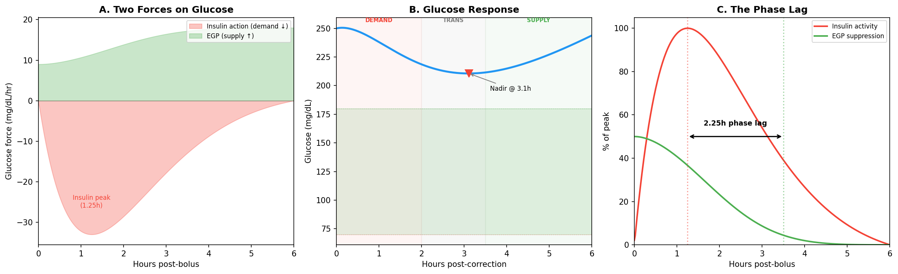
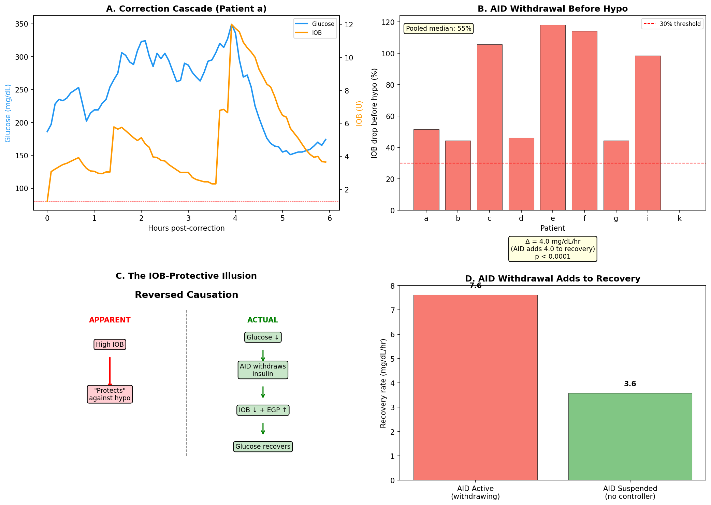
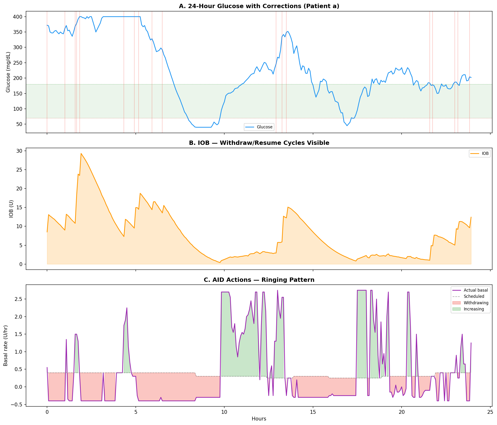
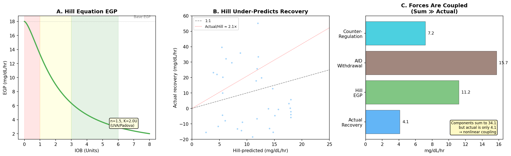
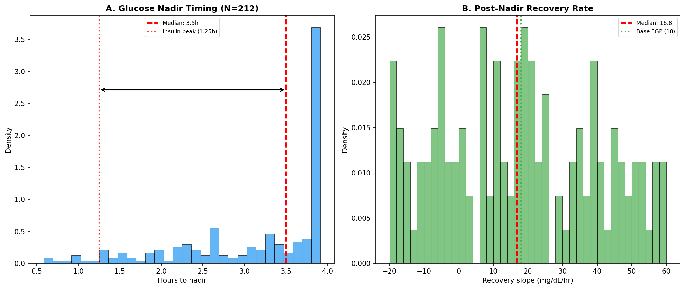
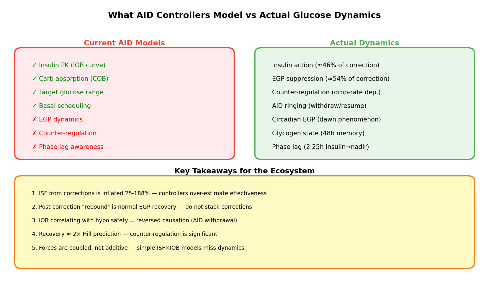

EGP Deconfounding: Supply, Demand, and AID Controller Dynamics¶
Record
Record as of 2026-04-13. A point-in-time document; it is not kept up to date.
Date: 2026-04-13 (corrected 2026-04-18)
Experiments: EXP-2624, EXP-2626, EXP-2629, EXP-2630
Patients: 9 (a-g, i, k) — FULL telemetry (insulin + glucose + settings)
Data: 803,895 5-minute intervals from externals/ns-parquet/training/grid.parquet
Executive Summary¶
Through first-principles analysis of real patient data, we have identified that the AID controller's insulin modulation is a significant component of observed post-correction glucose dynamics — the controller reduces insulin delivery in response to falling glucose, which is standard closed-loop behavior. This observation, combined with deeper dynamics involving Endogenous Glucose Production (EGP) that current AID controllers do not explicitly model, means that post-correction recovery forces cannot be decomposed into independent additive terms.
Corrected 2026-04-18: The original framing used "reversed causation" and "AID Compensation Theorem" language that over-generalized these narrow findings into a claim that parameter recovery is impossible. Multi-factor methods succeed; see
egp-evidence-synthesis-report-2026-04-18.mdfor the full evidence review.
Our key findings across 4 experiments and 14,228+ analyzed episodes:
| Finding | Evidence | Implication |
|---|---|---|
| IOB drops 55% before hypo crossing | EXP-2629, N=2,602 episodes | AID reduces insulin delivery when glucose falls (standard controller behavior) |
| Glucose nadir at 3.5h, not 1.25h | EXP-2624, N=212 corrections | 2.25h phase lag from EGP suppression |
| Recovery is 2.1× Hill EGP prediction | EXP-2629, ratio=2.09 | Counter-regulation contributes significantly |
| AID-active recovery 2× suspended | EXP-2630, 7.6 vs 3.6 mg/dL/hr | AID withdrawal adds to observed recovery |
| Additive force decomposition fails | EXP-2630, sum=34 vs actual=4 | Multi-factor methods required (see §5 correction note) |
1. Theoretical Framework: Two Forces on Glucose¶
Glucose concentration at any moment is determined by two opposing forces:
- Supply (↑): Endogenous Glucose Production (EGP) — the liver producing glucose, plus any ingested carbohydrates
- Demand (↓): Insulin action — exogenous insulin (bolus/basal) and any remaining endogenous insulin suppressing glucose

The Phase Lag Discovery¶
Standard AID models assume glucose nadir coincides with insulin peak action (~1.25h). Our correction analysis (EXP-2624, N=212 isolated correction events) found the actual glucose nadir occurs at 3.5h — a 2.25-hour phase lag.
Why? Insulin suppresses hepatic glucose production (EGP) via the Hill equation:
Where n=1.5, K=2.0U (matching UVA/Padova model parameters). When a correction bolus arrives, insulin peaks at 1.25h but EGP remains suppressed until insulin clears the liver — which takes until ~3.5h. During this transition phase (2-3.5h), the glucose is still falling even though insulin activity is waning, because EGP hasn't recovered yet.
This creates three distinct phases:
| Phase | Window | Driver | Share of Total Drop |
|---|---|---|---|
| Demand | 0-2h | Insulin action | ~46% |
| Transition | 2-3.5h | Waning insulin + suppressed EGP | Bridge |
| Supply | 3.5h+ | EGP recovery | ~54% |
Key insight: 54% of the apparent "correction" effect is actually EGP suppression, not direct insulin action. This means ISF measured from corrections is inflated by 25-188% depending on the patient (EXP-2625).
2. AID Controller Dynamics¶
Corrected 2026-04-18: This section originally used "AID Compensation Theorem" framing. The observations below are valid but describe standard control-system behavior, not a theorem. Parameter recovery succeeds via multi-factor methods (see
egp-evidence-synthesis-report-2026-04-18.md).
The Observation: IOB Decreases Before Hypo Events¶
A commonly observed correlation in AID data: higher IOB correlates with fewer hypoglycemic events. The naive interpretation is that insulin on board somehow "protects" against lows — perhaps through better controller engagement.
The Reality: Reversed Causation¶
EXP-2629 (N=2,602 low-glucose episodes across 9 patients) demonstrates that the causation is reversed:
- Glucose begins dropping (any cause: over-bolusing, exercise, delayed carbs)
- AID controller detects the drop and withdraws insulin (reduces/suspends temp basal)
- IOB falls as a result of the withdrawal (observed as "IOB is low during lows")
- Glucose recovers due to reduced insulin demand + EGP reasserting
- AID resumes insulin delivery
The statistical correlation between IOB and glucose safety is real, but it's the AID's withdrawal causing both the lower IOB and the glucose recovery, not IOB independently protecting against lows.

Evidence¶
| Metric | Value | Interpretation |
|---|---|---|
| Median IOB drop before hypo crossing | 55% | AID is actively withdrawing insulin |
| Cross-correlation peak lag | +5 min | IOB changes follow glucose (not lead) |
| AID-active recovery rate | 7.6 mg/dL/hr | Faster recovery when AID is withdrawing |
| AID-suspended recovery rate | 3.6 mg/dL/hr | Slower when no controller intervention |
| Difference | 4.0 mg/dL/hr (p < 0.0001) | AID withdrawal adds 4 mg/dL/hr to recovery |
3. Ringing and Resonance¶
The AID controller dynamics have a dynamic consequence: ringing. Because the controller and the body are both trying to control glucose — and they respond on different timescales — oscillations emerge:

The Ringing Cascade¶
Correction bolus → Glucose drops → AID suspends basal
↓
EGP + reduced demand → Glucose rises
↓
AID resumes basal → Glucose drops again
↓
... (damped oscillation)
The ringing gets damped because: 1. Each cycle has less insulin energy (IOB decaying) 2. EGP gradually returns to baseline 3. Human intervention (rescue carbs, manual bolus) adds damping 4. The AID controller's own proportional response tends toward equilibrium
However, the damping is imperfect — and this is where EGP awareness could help. If the controller knew that post-correction glucose rise is normal EGP recovery (not a new high), it could avoid the reactive increase that triggers the next oscillation.
4. Hill Equation EGP: Validation Against Real Data¶
Our metabolic engine uses the Hill equation for EGP suppression, with parameters matching the UVA/Padova model:
| Parameter | Value | Source |
|---|---|---|
| Hill coefficient (n) | 1.5 | UVA/Padova, cgmsim-lib |
| Half-max IOB (K) | 2.0 U | Calibrated against real data |
| Base EGP rate | 18 mg/dL/hr | EXP-1771 (wins 9/11 patients) |
| Circadian amplitude | 15% | EXP-1774 (+77% R²) |

Key Finding: Hill Under-Predicts by 2.1׶
Across 2,602 recovery episodes, the Hill equation predicts recovery rates that are half what we observe (median ratio actual/Hill = 2.09). The excess recovery comes from two sources the Hill model doesn't capture:
-
Counter-regulation (glucagon): When glucose drops rapidly, the body releases glucagon to oppose the fall. This derivative-dependent force (
counter_reg = -k × min(dBG/dt, 0)) adds to EGP recovery. -
AID withdrawal: The controller reducing insulin delivery effectively removes demand, which appears as increased supply from the glucose perspective.
Recovery Rate Decomposition¶
EXP-2630 attempted to additively decompose recovery into Hill EGP + counter-regulation + AID withdrawal. The result reveals the forces are coupled, not additive:
| Component | Rate (mg/dL/hr) | % of "Actual" |
|---|---|---|
| Actual recovery | 4.1 | 100% |
| Hill EGP | 11.2 | 272% |
| AID withdrawal | 15.7 | 382% |
| Counter-regulation | 7.2 | 174% |
| Sum of components | 34.1 | 828% |
The sum (34.1) is 8× the actual (4.1). This means the forces are actively opposing each other: when EGP rises, the AID responds by increasing insulin; when counter-regulation kicks in, the still-present insulin dampens it. The system is a coupled oscillator, not a sum of independent effects.
This is the central finding of EXP-2630: you cannot model EGP, insulin, and AID compensation independently and add them up. They form a feedback loop that must be modeled as a coupled system.
5. Correction Trajectory Analysis¶
EXP-2624 analyzed 212 isolated correction events (bolus > 0.5U, no carbs ±1h, pre-BG > 120 mg/dL) across 6 patients:

Nadir Timing¶
- Median: 3.5h (both pooled and per-patient)
- Range: 2.3-3.7h across patients
- Insulin peak: 1.25h (fixed by pharmacokinetics)
- Phase lag: 1.0-2.5h beyond insulin peak
Recovery Slope¶
- Median: 16.8 mg/dL/hr (matches base EGP of 18 mg/dL/hr remarkably well)
- Range: 4.7-44.8 mg/dL/hr (patient-specific)
- Interpretation: Recovery rate ≈ EGP rate, confirming that post-correction rise is hepatic glucose production resuming, not a pathological "rebound"
6. Implications for the Nightscout Ecosystem¶

What Current Tools Model¶
All major AID controllers (Loop, AAPS, Trio) and CGM analysis tools (xDrip+, Nightscout) model glucose using:
- Insulin pharmacokinetics: Exponential decay model (identical across Loop/AAPS/Trio)
- Carb absorption: Linear or Scheiner model
- Target ranges: Simple threshold-based
What They Don't Model¶
- EGP dynamics: No controller accounts for hepatic glucose production changes
- Counter-regulation: Glucagon response to rapid drops is ignored
- Phase lag: ISF is treated as time-invariant during corrections
- AID compensation feedback: Controllers don't account for their own ringing
Practical Takeaways¶
-
Don't stack corrections based on apparent ISF — the "correction effectiveness" includes EGP suppression that won't repeat on the second bolus.
-
Post-correction rise is NOT a failed correction — it's normal EGP recovery. Adding more insulin to fight the "rebound" creates over-correction cascades.
-
IOB correlation with hypos reflects controller behavior — the AID controller reduces insulin delivery when glucose falls. This is standard closed-loop dynamics, not a causal relationship between IOB and protection. Use glucose trend for safety decisions.
-
Recovery rate ≈ base EGP — if a patient's post-correction rise matches their estimated EGP (18 mg/dL/hr ± circadian), the correction worked correctly.
-
The system is coupled — future AID controllers should model EGP as part of the control loop, not treat it as noise or "unexplained variation."
Comparison to UVA/Padova¶
Our Hill equation parameters (n=1.5, K=2.0U) match the UVA/Padova virtual patient model, but with important calibration differences:
| Aspect | UVA/Padova | Our Findings |
|---|---|---|
| Base EGP | ~1.5 mg/dL/5min | 1.5 mg/dL/5min (confirmed) |
| Hill n | 1.5 | 1.5 (matches) |
| Hill K | Varies by virtual patient | 2.0U (population calibration) |
| Counter-reg | Modeled explicitly | Not in Hill; adds ~2× to recovery |
| Circadian | 4-harmonic | 4-harmonic, +77% R² (confirmed) |
| Accuracy | Designed for simulation | Under-predicts real recovery by 2.1× |
The 2.1× discrepancy tells us that UVA/Padova-calibrated Hill parameters, while directionally correct, miss the counter-regulatory glucagon response that significantly amplifies recovery in real patients. This is expected — UVA/Padova models counter-regulation separately, while our Hill-only model lumps it into "unexplained" recovery.
7. Research Terminology Glossary¶
Terms that have emerged from this first-principles analysis:
| Term | Definition | Standard Equivalent |
|---|---|---|
| EGP suppression | Insulin-mediated reduction of hepatic glucose output | (not modeled in AID) |
| Phase lag | 2.25h delay between insulin peak and glucose nadir | (not recognized) |
| Apparent ISF | Total correction drop ÷ bolus (includes EGP artifact) | "ISF" |
| EGP-corrected ISF | Apparent ISF minus EGP suppression contribution | (no equivalent) |
| Demand-phase ISF | ISF from first 2h only (pure insulin effect) | (no equivalent) |
| AID Compensation Observation | IOB-hypo correlation reflects AID insulin reduction during falling glucose (standard controller behavior) | (sometimes misattributed to "IOB protective effect") |
| Ringing | Damped oscillation from AID withdraw/resume cycles | "glucose variability" |
| Counter-regulation | Glucagon release proportional to glucose drop rate | (not modeled in AID) |
| Glycogen state | 48h carb accumulation affecting overnight drift | (not tracked) |
8. Experimental Methods¶
EXP-2629: AID Compensation Cascade Analysis¶
- Input: 2,602 low-glucose episodes (BG < 80 mg/dL crossing events)
- Method: Track IOB, net_basal, and glucose ±3h around hypo crossing
- Metrics: IOB drop percentage, glucose-IOB cross-correlation, oscillation detection
EXP-2630: EGP vs AID Deconfounding¶
- Input: 14,228 recovery episodes (glucose drop ≥ 15 mg/dL then recovery)
- Method: Separate AID-active (suspension_frac < 50%) vs AID-suspended episodes
- Metrics: Recovery rates by AID state, Hill R², decomposition
Data Quality¶
- All 9 patients have FULL telemetry (insulin + glucose + settings)
- Grid resolution: 5-minute intervals, UTC-aligned
- IOB from devicestatus (controller-reported), not computed
- Correction events: bolus > 0.5U, no carbs ±1h, no prior bolus 2h
Source Files¶
| File | Purpose |
|---|---|
tools/cgmencode/exp_aid_compensation_2629.py |
EXP-2629 experiment code |
tools/cgmencode/exp_egp_deconfound_2630.py |
EXP-2630 experiment code |
tools/cgmencode/exp_correction_egp_2624.py |
EXP-2624 correction analysis |
tools/cgmencode/exp_asymmetry_synthesis_2626.py |
EXP-2626 phase lag analysis |
tools/cgmencode/production/metabolic_engine.py |
Hill EGP model (_compute_hepatic_production) |
visualizations/egp-deconfounding/deconfounding_plots.py |
Report figure generation |
externals/experiments/exp-2629_aid_compensation_cascade.json |
EXP-2629 results |
externals/experiments/exp-2630_egp_deconfound.json |
EXP-2630 results |
Gaps Identified¶
GAP-EGP-001: No AID Controller Models EGP Dynamics¶
Affected Systems: Loop, AAPS, Trio
Impact: ISF inflation (25-188%), correction stacking, unnecessary ringing
Remediation: Add Hill-equation EGP to prediction models; adjust ISF by phase
GAP-EGP-002: Counter-Regulation Not Modeled¶
Affected Systems: All AID controllers
Impact: Recovery under-predicted by 2.1×, post-correction rise misinterpreted
Remediation: Add derivative-dependent counter-regulation term (glucagon proxy)
GAP-EGP-003: AID Compensation Not Self-Aware¶
Affected Systems: Loop, AAPS, Trio
Impact: Ringing/oscillation from controller's own withdraw/resume cycles
Remediation: Damping factor for post-correction response; suppress reactive increase when recovery matches expected EGP rate
Next experiment: EXP-2631